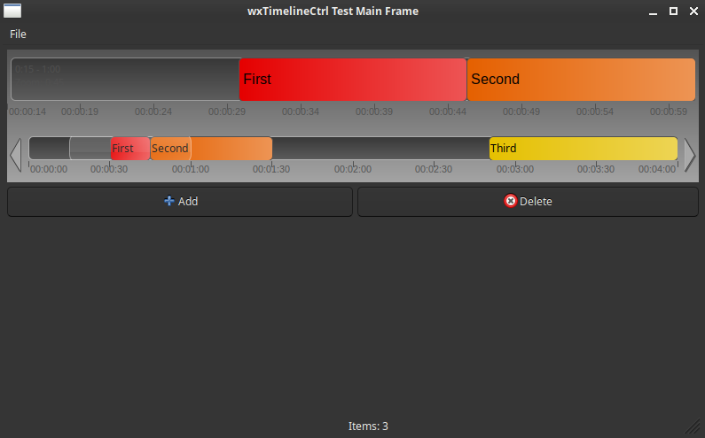

A powerful, interactive timeline control component for wxWidgets applications. This project provides both a reusable library and a sample application demonstrating its capabilities.

üìã Table of Contents
- Features
- Quick Start
- Project Structure
- Building the Project
- Using the Sample Application
- Library Usage
- Documentation
- Development
- Continuous Integration
- Troubleshooting
- License
✨ Features
- Interactive Timeline Control: Drag, zoom, and pan through timeline data
- Dual View System: Main timeline view with overview scroller
- Item Management: Add, move, resize, and delete timeline items
- Smart Insertion: Detached drag mode with automatic item shifting
- Template-Based: Generic template design for custom data types
- Header-Only Library: Easy integration into existing projects
- Cross-Platform: Built on wxWidgets for Windows, macOS, and Linux
- CMake Build System: Modern, professional build configuration

üöÄ Quick Start
Prerequisites
- CMake (version 3.16 or higher)
- wxWidgets (version 3.0 or higher)
- Visual Studio (2019 or 2022) or another C++ compiler
- WXWIN environment variable set to your wxWidgets installation path
Build and Run
üìÅ Project Structure
üî® Building the Project
Setting up wxWidgets
Before building, ensure the WXWIN environment variable is set:
Windows (Command Prompt):
Windows (PowerShell):
Permanent Setup: Add the WXWIN environment variable through:
- Control Panel → System → Advanced System Settings → Environment Variables
Build Options
Option 1: Using Build Scripts (Recommended)
Windows Batch Script:
PowerShell Script:
Option 2: Manual CMake Build
Build Output
After building, you'll find:
üéÆ Using the Sample Application
The sample application demonstrates all features of the wxTimelineCtrl component.
Interface Overview
The application window consists of:
- Main Timeline View (Top Area): Large, detailed view for interacting with individual items
- Scroller View (Bottom Area): Overview of the entire time range with draggable viewport
- Control Buttons: "Add" and "Delete" buttons for item management
Interaction Guide
Navigation (Panning and Zooming)
Panning (Moving Left and Right):
- Mouse Wheel: Hover over main timeline and roll mouse wheel
- Arrow Keys: Use Left and Right arrow keys for smooth panning
Zooming (Changing Detail Level):
- Zoom In:
Ctrl++ - Zoom Out:
Ctrl+-
Item Manipulation
Adding a New Item:
- Click the **"Add"** button
- Configure item properties:
- Name: Text displayed on the item
- Start Time & Duration: Position and length on timeline
- Color: Background color
- Click "OK" to add the item
Moving and Resizing Items:
- Move Item: Left-click and drag horizontally to change start time
- Smart Insert: Hold
Ctrlin Scroller View, then drag item - other items automatically shift right
Deleting Items:
- Click **"Delete"** button
- Select items to delete in the confirmation dialog
- Click "OK" to remove permanently
- Alternative: Use
Deletekey on keyboard
Context Menu:
- Right-click on selected item in main timeline for context menu with delete option
üìö Library Usage
The wxTimelineCtrl library is designed as a header-only library for easy integration into your own projects.
CMake Integration
Method 1: Add as Subdirectory
Method 2: Copy Headers
- Copy the library headers from
lib/directory to your project - Include the headers in your source files
- Link against wxWidgets
Basic Usage Example
Key Classes
<tt>wxTimelineCtrl<T></tt>
The main timeline control template class.
Key Methods:
SetTotalDuration(int seconds)- Set total timeline durationSetVisibleDuration(int seconds)- Set visible time rangeSetFirstVisibleTime(int seconds)- Set viewport start timeAddItem(T* data, const wxColour& colour)- Add timeline itemRemoveItem(T* data)- Remove timeline itemGetSelectedItems()- Get selected item indicesZoomToSelection()- Zoom to fit selected items
<tt>TimelineItemData</tt>
Base class for timeline data items.
Key Methods:
GetStartTime()/SetStartTime(int)- Item start timeGetEndTime()/SetEndTime(int)- Item end timeGetDuration()/SetDuration(int)- Item durationGetName()/SetName(const wxString&)- Item name (virtual)
<tt>TimelineArtProvider</tt>
Customizable art provider for drawing timeline elements.
Customizable Methods:
DrawBackground()- Timeline backgroundDrawItem()- Individual timeline itemsDrawTimeScale()- Time scale labelsDrawVisibleFrame()- Viewport indicator
Events
The timeline control generates the following events:
üìñ Documentation
API Documentation
Comprehensive API documentation is automatically generated using Doxygen and is available online:
The documentation includes:
- Class Reference: Complete API documentation for all classes and methods
- Usage Examples: Code samples and implementation patterns
- Integration Guide: Step-by-step integration instructions
- Architecture Overview: System design and component relationships
Documentation Features
- Searchable Interface: Find classes, methods, and topics quickly
- Cross-Referenced: Navigate between related components easily
- Code Examples: Practical usage examples throughout
- Modern Theme: Clean, responsive design with dark/light mode support
- Auto-Generated: Always up-to-date with the latest code changes
Generating Documentation Locally
To generate the documentation locally:
Documentation Updates
The online documentation is automatically updated when:
- Changes are pushed to the
mainbranch - The Doxygen workflow completes successfully
- New API changes are merged
üîß Development
CMake Targets
The build system creates the following targets:
- wxTimelineCtrl_Lib - Header-only interface library containing the timeline control
- wxTimelineCtrl_App - Sample application demonstrating the timeline control
- wxTimelineCtrl_Headers - Custom target for IDE support (shows headers in project view)
Build Configuration
Build Types
- Debug - Includes debug symbols and console output
- Release - Optimized build for production
Platform Support
- x64 - 64-bit Windows (default)
- Win32 - 32-bit Windows
Custom Build Configuration
You can customize the build by modifying the CMakeLists.txt files:
- Main CMakeLists.txt - Overall project configuration
- lib/CMakeLists.txt - Library-specific settings
- app/CMakeLists.txt - Application-specific settings
üîÑ Continuous Integration
This project uses GitHub Actions for automated building and testing across multiple platforms.
Supported Platforms
- Windows (latest) - Visual Studio 2022, x64
- Linux (Ubuntu latest) - GCC with wxWidgets 3.0/3.2
- macOS (latest) - Clang with Homebrew wxWidgets
Build Matrix
The CI pipeline builds the following configurations:
| Platform | Configuration | Architecture | Status |
|---|---|---|---|
| Windows | Debug | x64 | |
| Windows | Release | x64 | |
| Linux | Debug | x64 | |
| Linux | Release | x64 | |
| macOS | Debug | x64 | |
| macOS | Release | x64 |
Build Triggers
Builds are automatically triggered on:
- Push to
main,master, ordevelopbranches - Pull requests to
main,master, ordevelopbranches
Build Artifacts
Successful builds generate the following artifacts:
- Windows:
wxTimelineCtrlTest.exeandwxTimelineCtrlTest.pdb - Linux:
wxTimelineCtrlTest(executable) - macOS:
wxTimelineCtrlTest(executable)
Artifacts are available for download from the Actions tab for 30 days.
Build Process
- Checkout: Source code is checked out with submodules
- Dependencies: Platform-specific dependencies are installed
- wxWidgets: On Windows, wxWidgets is cached and built if needed
- Build: Project is built using CMake and platform-specific tools
- Test: Executable is verified to ensure successful build
- Artifacts: Build outputs are uploaded for download
Local vs CI Build
The CI build process is designed to match the local build experience:
- Uses the same CMake configuration
- Runs the same verification scripts
- Produces identical executables
üõ†Ô∏è Troubleshooting
Common Issues
1. WXWIN not set
Problem: WXWIN environment variable not set
Solution:
- Ensure the WXWIN environment variable points to your wxWidgets installation
- Restart your command prompt/IDE after setting the variable
2. wxWidgets not found
Problem: wxWidgets not found during CMake generation
Solution:
- Verify wxWidgets is properly built and installed
- Check that wxWidgets CMake files are available
- Ensure you're using the correct wxWidgets version (3.0+)
3. Build errors
Problem: Compilation errors during build
Solution:
- Ensure you have the correct Visual Studio version (2019 or 2022)
- Check that all required dependencies are installed
- Verify C++ standard is set to 17 or higher
4. Missing executable
Problem: Built executable not found
Solution:
- Check the correct output directory:
build/generated/Release/orbuild/generated/Debug/ - Ensure build completed successfully without errors
- Try rebuilding with verbose output:
cmake --build . --config Release --verbose
Debug Build
For debugging purposes, build with Debug configuration:
This enables:
- Debug symbols for step-through debugging
- Console output window for logging
- Additional debugging information
- Slower execution with full error checking
Verification Script
Before building, always run the verification script:
This checks:
- CMake installation and version
- WXWIN environment variable
- wxWidgets installation and headers
- Source files presence
- Build directory structure
üìÑ License
This project is provided as-is for educational and development purposes. Please refer to the individual source files for specific licensing terms.
üíñ Support Open Source Development
If you find this wxWidgets component helpful and would like to support the development of open source wxWidgets libraries and components, consider making a donation. Your support helps maintain and improve this project, and enables the creation of more high-quality wxWidgets tools for the community.
Why Support?
- üöÄ Accelerate Development: Your donations help dedicate more time to improving existing features and adding new ones
- üêõ Better Bug Fixes: Support enables faster response to issues and more thorough testing
- üìö Enhanced Documentation: Contributions help create better examples, tutorials, and API documentation
- üåü New Components: Support the creation of additional wxWidgets controls and libraries
- ❤️ Say Thank You: A simple way to show appreciation for the time and effort put into open source development
Donate via PayPal

Every contribution, no matter how small, is greatly appreciated and helps keep this project alive and growing!
Thank you for using wxTimelineCtrl and for supporting open source wxWidgets development! üôè
Happy coding! üöÄ
For questions, issues, or contributions, please refer to the project documentation or create an issue in the project repository.